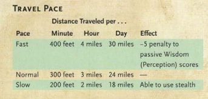

In D&D you have many things you need to do, an evil warlord that needs to be killed, a dragon terrorizing a villiage, a satanic ritual that if not stopped will summon a dark lord to enslave the world.
Regaurdless of motivation you still need to get where you're going, on your charechter sheet it has a location where it displays your speed, that's your movment speed per turn. the table above shows what you can travel outside of combat (assuming you have the standerd walking speed of 30) this is the typical speed you will be able to move when going long distance. The speed on your charechter sheet displays how far you can move per turn (each turn is 6 seconds) even if you could move faster then your party it is unadvised as that would split the party which, is always a bad idea. You can also find other ways to improve this speed in the Vehicles section of this website